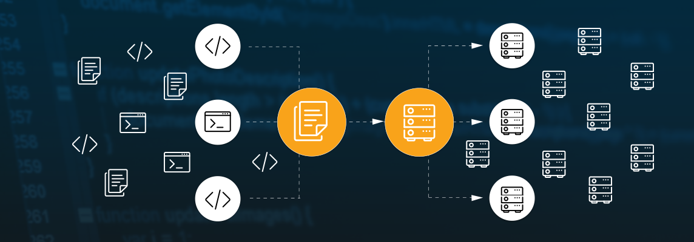
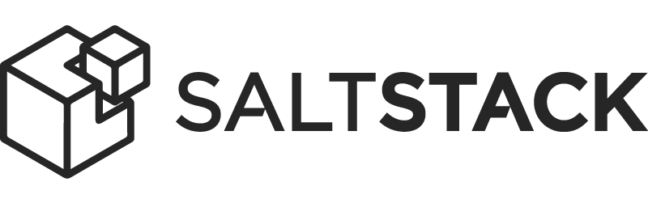
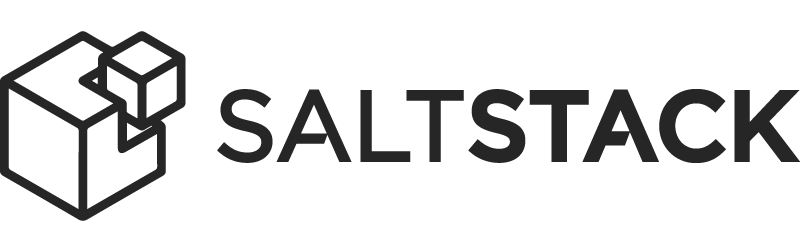

Infra as Code
Torne-se um profissional diferenciado!!!!
Workshop Ansible
Diego Morales
 /papodesysadmin
/papodesysadmin

 @papodesysadmin
http://papodesysadmin.org
@papodesysadmin
http://papodesysadmin.org
 @dgmorales
dmorales@stone.com.br
@dgmorales
dmorales@stone.com.br
Estes slides:
http://dgmorales.info/cpbr10
Instale aí: ansible, git, vagrant, virtualbox
Somos todos programadores

Infraestrutura como código

É para todos
- Repositórios de pacotes (mirrors/proxy)
- Resolver DNS, cliente NTP
- Usuários, integração LDAP/AD
- Agente de monitoramento, SNMP
- Backup (agente, etc)
- Regras gerais de FW
- Config de envio de emails
- Logs: rotação, servidor central
Ahh ... mas eu tenho uma imagem, preseed/kickstart, script, documentação ...
Não é só velocidade e escala
É documentação executável. Permite ...
- ... consistência na implementação
- ... preservar e evoluir conhecimentos
- ... versionamento
- ... revisão pelos pares
- ... testes repetíveis, e até automatizados
- ... uma gerência de mudanças que faz sentido
Config Management
 

A negação
Ahh, é muito complicado.
Ahh, eu tenho um script aqui que já faz tudo o que eu preciso.
Ahh, essa tarefa aqui precisa de um input humano diferente toda vez, não tem como automatizar.
"Ansible’s main goals are simplicity and ease-of-use."
- Agentless
- Push over SSH. Pull rodando local.
- Windows: WinRM + PowerShell Remoting
- Simplifica orquestração em várias máquinas
- Linguagem: YAML + templates jinja2
- Python!
- Auth/Crypto: seu fiel amigo SSH
- hosts: all
name: Install SSH Server
tasks:
- package: name=openssh-server state=present
- template:
src: sshd_config
dest: /etc/ssh/sshd_config
owner: root
group: root
mode: 0644
notify:
- restart ssh
- service: name=ssh state=started
handlers:
- name: restart ssh
service: name=ssh state=restarted
Install SSH Server é uma play, aplicada em all hosts
package (new in 2.0), template e service são modules
Loops
- hosts: all
tasks:
- name: create symlinks for our app
file: >
state=link src=/opt/myapp/bin/{{ item }}
dest=/usr/local/bin/myapp-{{ item }} force=yes
with_items:
- run
- build
- update
- foo
with_dict, with_nested, with_fileglobs, e mais...
E mais ...
- Varíaveis
- Criando roles
- Senhas no Ansible Vault ...
- ... ou em algo como o Hashicorp Vault + lookups (hashi_vault ou ansible-vault)
- Suporte ao Windows
- ansible-container
- Ansible Tower
- Integrando com o Rundeck
Bora brincar
Contato
Diego Morales
 /papodesysadmin
/papodesysadmin

 @papodesysadmin
http://papodesysadmin.org
@papodesysadmin
http://papodesysadmin.org
 @dgmorales
dmorales@stone.com.br (estamos contratando!)
@dgmorales
dmorales@stone.com.br (estamos contratando!)
Do, Automate, Repeat: http://doauto.blog
Slides: http://dgmorales.info/cpbr10